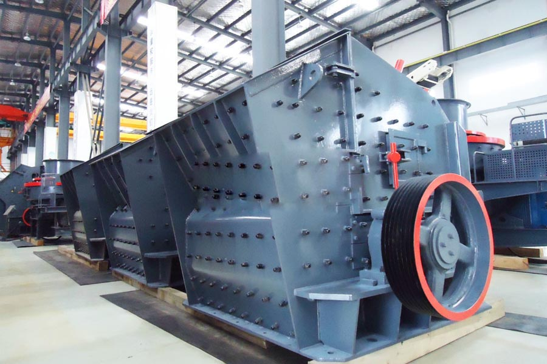
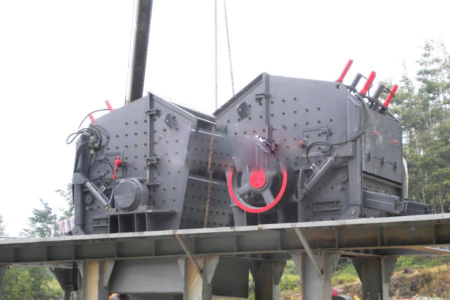

- Home >
- stone crusher >
- vertical impact crusher design

Construction waste crushing production line

Mobile construction waste crushing station for urban construction waste crushing.
vertical impact crusher design
vertical impact crusher design Introduction
Impact crusher is a new high-efficiency crushing equipment, which is characterized by small size, simple structure, large crushing ratio (up to 40), low energy consumption, production capacity, uniform particle size, and selective crushing effect is a promising device. But its biggest drawback is that hammer and counter plate special easy to wear, especially crushing hard ore, wear is more serious, need frequent replacement. At present, because some wear-resistant materials, and in some metal concentrator has been applied.

Impact crusher classification
PF-I series impact crusher series adapted to the hard rock crushing, the particle size of its typical granite ≤40mm accounted for 90%. The machine can deal with side length of 100 to 500 mm for the following materials, the compressive strength of up to 350 MPa, with a crushing ratio, after crushing advantage cubic grains and other materials were.
Type PF-II series impact crusher series suitable for crushing hard materials, its typical granite expected size ≤25mm accounted for 85%. Such as cement plant limestone crushing. Having a large capacity, the advantages of small size discharge.
PF-III series impact crusher series adapted to the concrete crushing, its typical granite expected size ≤30mm accounted for 85%. With a large feed size, processing power advantages.
Impact crusher technical parameters
| Model | Specification |
Inlet size （MM） |
The maximum feed size （MM） |
Production capacity （T/H） |
Power （KW） |
Weight （T） |
| PF-0607 | 644X740 | 320X770 | 100 | 10-20 | 30 | 5 |
| PF-0807 | 850X700 | 400X730 | 300 | 15-30 | 45 | 7.8 |
| PF-1008 | 1000X800 | 400X830 | 300 | 30-50 | 55 | 10 |
| PF-1010 | 1000X1050 | 400X1080 | 350 | 50-80 | 75 | 14 |
| PF-1210 | 1250X1050 | 400X1080 | 350 | 70-120 | 110 | 18 |
| PF-1214 | 1250X1400 | 400X1430 | 400 | 120-180 | 132 | 23 |
| PF-1315 | 1320X1500 | 860X1520 | 500 | 160-250 | 260 | 28 |
| PF-1320 | 1320X2000 | 860X2030 | 500 | 250-400 | 320 | 45 |

Impact crusher works
Impact crusher is a use of impact energy to crush materials broken machinery. When the machine work, driven by the motor, the high-speed rotation of the rotor, when the material into the plate hammer area, and the impact on the rotor hammer crusher, then crushing device was thrown on the counter-attack again, and then from the liner counter bounced back plate hammer again crushing area, this process is repeated, the material descending into the one, two, three counter-cavity repeated broken, until the material is crushed to the desired particle size by the discharge port. Gap adjustment between the impact rack and rotor materials can achieve the change the shape of the particle size and material purposes. Stone from the top of the machine directly into the high-speed rotation of the turntable; the role of the high-speed centrifugal force, and the other part to shunt umbrella way to generate high-density high-speed collision and crushing the turntable around the flying rocks, stones at each other after the fight, will many times against each other and cause friction, crushing, straight from the lower discharge between the turntable and chassis form a vortex motion. Forming a closed loop several times, controlled by the screening equipment to reach the required size.
Leave Me A Message, Now
If you have any questions regarding equipment prices, production line configuration or other problems, you can send a message to us, we will contact you soon.